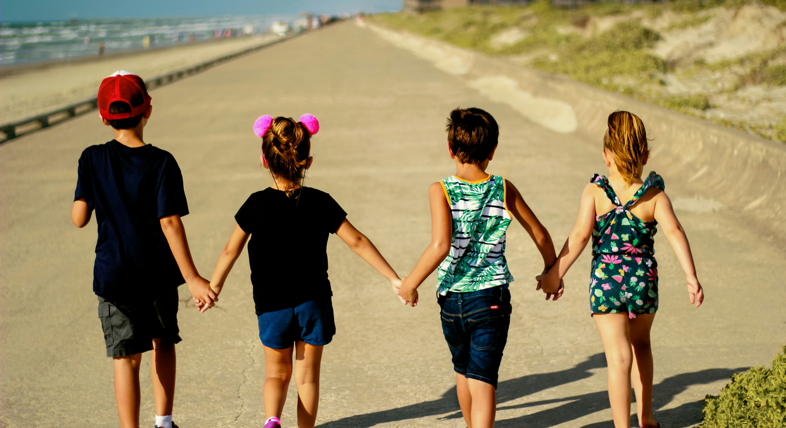

Who Are We?
Kindernest Preschool was founded to create a loving, safe, and stimulating environment where children take their first steps into learning. We support families with quality care and holistic education for children aged 3 months to 6 years.
Our Mission
We believe in play-based learning to nurture confident, curious, and kind children. Activities like storytelling, art, music, swimming, and gymnastics build essential life skills while making learning fun.
Our Values
Love & Care: Every child deserves to feel safe and valued.
Holistic Growth: Education goes beyond books, fostering mind, body, and heart.
Community & Family: Parents are partners in building a strong foundation.
Excellence & Integrity: We uphold high standards in everything we do.
Inclusivity & Respect: We celebrate diversity and teach empathy.
Fun & Creativity: Learning should be joyful and inspire imagination.
Safety & Well-being: A secure environment is essential for growth.
Continuous Improvement: We strive to evolve and enhance our programs.
